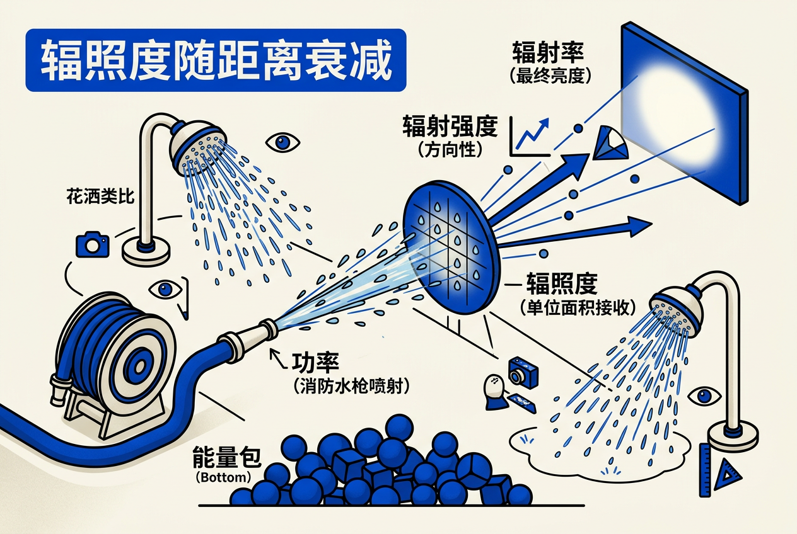
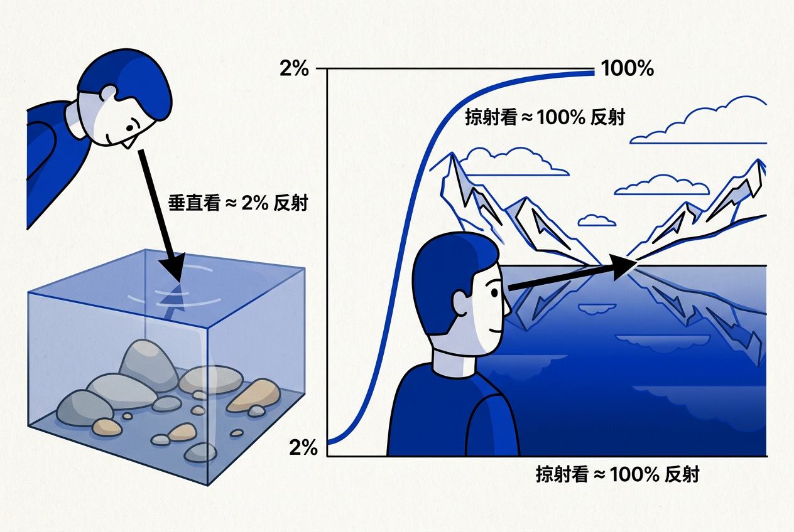
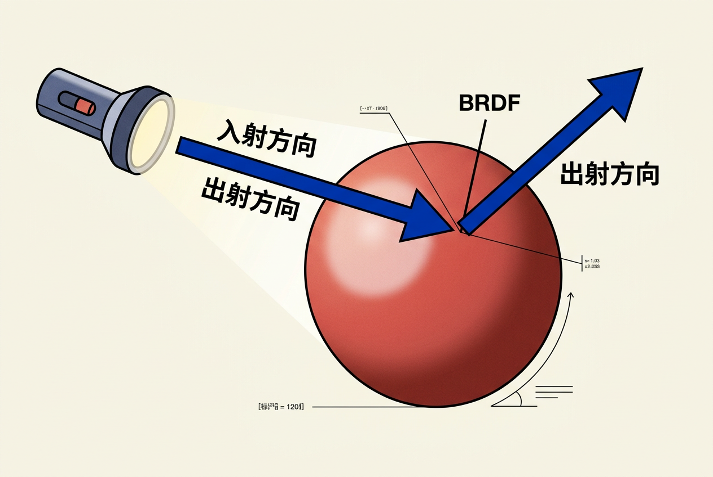
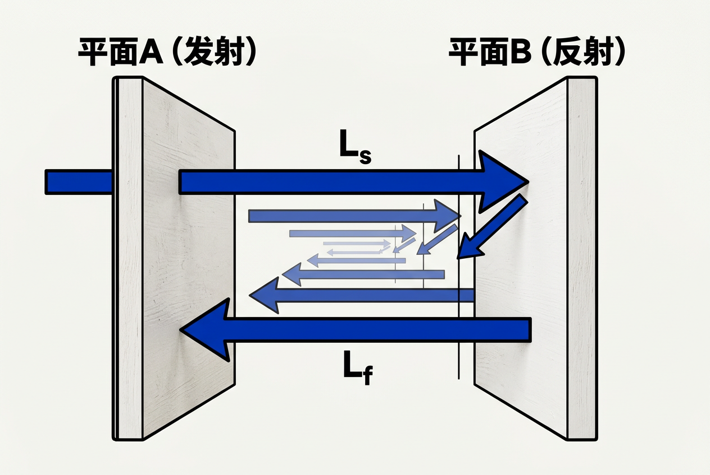
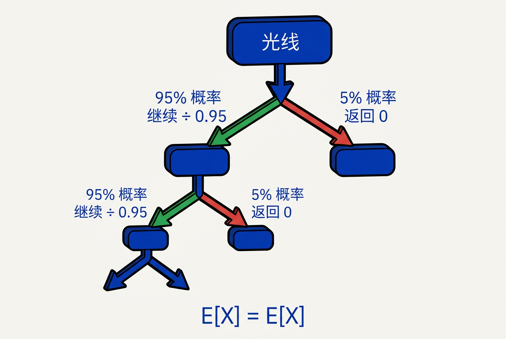

第14章：物理渲染（Physically Based Rendering）— 零基础讲义
讲义说明
本讲义基于 Steve Marschner & Peter Shirley 所著《虎书5》第5版第14章（p.357-379）。
本章是图形学的"物理学"——它告诉你：怎么严格地用物理方程描述光的产生、传播、反射、折射、散射。
学完本章，你将真正理解 Path Tracing、BRDF、辐射度量学（Radiometry）等 PBR 核心概念。
本版插画采用 Guizang 材质插画风格重新绘制。
学习目标
- 理解光子的本质——能量包
- 掌握辐射度量学（Radiometry）——每个量都先讲动机
- 理解BRDF——用"手电筒照射红球"的例子
- 掌握传输方程（Transport Equation）——从1D简化版开始
- 理解Fresnel方程——湖面"低头vs抬头"的直觉
- 掌握俄罗斯轮盘赌——PR=0.95的期望推导
- 理解Monte Carlo Path Tracing
14.1 光子（Photons）——光的"能量包"
14.1.1 光子的本质
想象一下，光不是连续的"水流"，而是一颗一颗的"子弹"——每一颗子弹就是一个光子，携带一份确定的能量。
| 属性 | 符号 | 含义 | 单位 |
|---|---|---|---|
| 位置 | x | 光子在空间中的坐标 | 米 |
| 方向 | d | 光子前进的方向（单位向量） | 无量纲 |
| 波长 | λ | 决定了光的"颜色"（红≈700nm, 紫≈400nm） | 纳米（nm=10⁻⁹m） |
| 能量 | q = hc/λ | 波长越短，能量越高（紫光比红光能量大） | 焦耳（J） |
公式：q = hc / λ
拆解：
- h = 普朗克常数（6.626×10⁻³⁴ J·s）——量子力学的"基本刻度"
- c = 光速（3×10⁸ m/s）——宇宙速度上限
- h·c = 约 1.99×10⁻²⁵ J·m ——两个常数的乘积
- ÷λ = 波长越短，能量越高。紫光（400nm）能量是红光（700nm）的1.75倍
14.1.2 图形学的简化
在图形学中，我们用几何光学近似——只关心光的直线传播、反射、折射。不考虑光的波动性和量子效应。这就是"光线"（ray）的概念来源：一个光子沿着一条直线飞行，直到碰到物体。
关键理解：渲染 = 模拟大量光子的传播过程。光源发射光子 → 光子击中物体 → 被反射/折射/吸收 → 部分进入相机 → 形成图像。用N个光子追迹，收集结果，取期望——这就是Monte Carlo物理渲染。
14.2 辐射度量学（Radiometry）——用消防水枪vs花洒来理解
14.2.1 动机：为什么需要这么多"尺子"？
想象你站在操场上，面前有一排消防水枪和一排花洒。
问题1：哪种更"亮"？
- 消防水枪：功率大（每秒喷出很多水），但集中在小面积
- 花洒：功率小（每秒喷出较少水），但覆盖大面积
如果只看功率，消防水枪赢了。但如果用单位面积接收到的水流量来看——消防水枪喷到的人"湿透了"，花洒只是"微微湿润"。
问题2：你站在远处和近处，哪个更"亮"？
- 消防水枪：近处水流集中→很亮，远处水流扩散→变暗
- 花洒：近处和远处差不多（因为本来就是散开的）
这就是为什么辐射度量学需要不同的"尺子"来量"光"——因为"亮"在不同的上下文中代表不同的物理量。

14.2.2 辐射度量学五量体系
| 物理量 | 符号 | 定义 | 单位 | 生活类比 |
|---|---|---|---|---|
| 辐射能 | Q | 光的总能量 | J（焦耳） | 水池里的总水量 |
| 辐射通量/功率 | Φ = dQ/dt | 单位时间通过的能量 | W（瓦特） | 水龙头的流量（每秒流出的水） |
| 辐照度 | E = dΦ/dA | 单位面积接收的功率 | W/m² | 你被淋得多湿（单位面积的水量） |
| 辐射强度 | I = dΦ/dω | 单位立体角的功率 | W/sr | 手电筒的聚光程度 |
| 辐射率 | L = d²Φ/(dA·cosθ·dω) | 从特定方向看的亮度 | W/(m²·sr) | 你眼中看到的亮度 |
14.2.3 功率（Radiant Flux / Power）
逐符号拆解：
- dQ = 能量变化量（极小的时间段内）
- dt = 时间变化量
- dQ/dt = 单位时间内的能量变化 = 功率
14.2.4 辐照度（Irradiance）
逐符号拆解：
- dΦ = 到达某点的功率
- dA = 该点的微小面积
- dΦ/dA = 单位面积上"落"了多少功率
立方反比定律：
同样是1W的灯光，在1米处辐照度是E₀，在2米处就是E₀/4——因为面积与距离平方成正比。
因为我们的眼睛看的是辐射率（Radiance），不是辐照度。星星的辐照度确实随距离衰减（1/r²），但辐射率沿直线不变——星星在视网膜上成像的大小和距离一起变化，两个效应抵消了。
14.2.5 辐射率（Radiance）——最重要的量
逐符号拆解——这个量为什么这么复杂？
- d²Φ = 极小的一束功率
- dA = 表面的微小面积
- cosθ = 面积法线与光束方向的夹角余弦——斜着看时"有效面积"变小
- dω = 光束的立体角——衡量"方向的范围有多宽"
辐射率在真空中的光线传播路径上保持不变！这意味着：
- 远处灯看起来和近处灯一样亮（不考虑大气衰减）
- 渲染器不用考虑距离衰减——光线传播中L是常数
- 这是PBR的"魔法"——它让渲染方程的数学变得一致
14.3 光滑表面：Fresnel + Snell + Beer
14.3.1 Fresnel方程——湖面低头vs抬头

想象你站在一个平静的湖边：
- 低头看（入射角≈0°，垂直看水面）：可以看到水底的石头、鱼——大部分光折射进入水中，只有约2%反射。水面几乎是透明的。
- 抬头看（入射角≈90°，平视远方）：水面变成了一面完美的镜子——看到远山、天空的倒影。几乎100%的光被反射。
这就是Fresnel效应：入射角越大，反射率越高。
Schlick近似（工业标准公式，简化了精确Fresnel方程）：
逐符号拆解：
- R(θ) = 入射角为θ时的反射率（0~1之间，0=全透射，1=全反射）
- R₀ = 法向入射（θ=0°）的反射率。用折射率计算：R₀ = ((n-1)/(n+1))²
- (1 - R₀) = 剩余的反射"潜力"（从法向到掠射角还能增加多少）
- (1 - cosθ)⁵ = 随角度变化的"爬升曲线"——从0到1的变化形状
常见材料的R₀：
| 材料 | 折射率 | R₀（法向反射率） | 典型表现 |
|---|---|---|---|
| 水 | 1.33 | ≈0.02（2%） | 透明，低反射 |
| 玻璃 | 1.5 | ≈0.04（4%） | 透明，中等反射 |
| 钻石 | 2.42 | ≈0.17（17%） | 透明，高反射 |
| 铝 | —（金属） | ≈0.9（90%） | 不透明，强反射 |
数值例子——水面的反射率变化：
| 入射角θ | cosθ | (1-cosθ)⁵ | R(θ)（水，R₀=0.02） |
|---|---|---|---|
| 0°（垂直） | 1.0 | 0 | 0.02（2%） |
| 30° | 0.866 | 0.000008 | ≈0.02（2%） |
| 60° | 0.5 | 0.031 | ≈0.05（5%） |
| 80° | 0.174 | 0.367 | ≈0.38（38%） |
| 85° | 0.087 | 0.634 | ≈0.64（64%） |
| 90°（掠射） | 0 | 1.0 | 1.0（100%） |
14.3.2 Snell定律——光穿入介质会拐弯
逐符号拆解：
- n₁, n₂ = 两种介质的折射率（空气=1.0，水=1.33，玻璃=1.5）
- θ₁ = 入射角（光线与法线的夹角，在介质1中）
- θ₂ = 折射角（光线与法线的夹角，在介质2中）
14.3.3 全反射（Total Internal Reflection）
当光从高折射率介质进入低折射率介质时，超过某个角度就会发生全反射。
例子——水到空气：sinθ_c = 1.0/1.33 = 0.752 → θ_c ≈ 48.7°
水中角度 > 48.7°时，光线全部反射回水中——所以你从水下仰望水面时，只能看到一个银色的"窗口"，看不到外面的世界。
14.3.4 Beer定律——光在介质中指数衰减
逐符号拆解：
- I(0) = 进入介质时的初始光强
- σ = 吸收系数（介质对光的吸收能力，越大吸收越快）
- s = 光在介质中传播的距离
- I(s) = 传播s距离后的剩余光强
为什么海水是蓝色的？
不同波长的光在海水中的吸收系数不同：
- 红光（λ≈700nm）：吸收系数大→衰减最快→水深1米后就基本消失
- 绿光（λ≈550nm）：中等衰减
- 蓝光（λ≈470nm）：吸收系数最小→衰减最慢→能穿透最深
所以深层海水看起来是蓝色的——因为红光和绿光都被吸收了，只剩下蓝光被散射回来。
14.4 BRDF——4D反射函数

14.4.1 什么是BRDF？
手电筒照红球的类比：
想象你用手电筒照射一个红色塑料球：
- 手电筒从正前方照射（入射角0°）：从正前方看非常亮（明显红色），从侧面看很暗
- 手电筒从侧面照射（入射角60°）：从侧面看明亮，从正前方看暗
BRDF回答的问题就是：给定入射方向（手电筒位置）和出射方向（你的眼睛位置），反射的亮度是多少？
数学定义：
逐符号拆解：
- ωᵢ = 入射方向（指向表面）
- ωₒ = 出射方向（指向观察者）
- dLₒ(ωₒ) = 从表面向ωₒ方向反射的辐射率增量
- dE(ωᵢ) = 从ωᵢ方向入射的辐照度
- f_r = 比值 = BRDF（单位：1/sr）
14.4.2 BRDF的关键属性
1. 互易性（Reciprocity）：
交换入射和出射方向，结果不变。这是物理定律——光路的可逆性。
2. 能量守恒：
所有反射出去的能量之和 ≤ 入射能量。如果一个表面反射了90%的光，这个积分=0.9。
3. Lambertian（理想漫反射）：
理想漫反射体——从任何角度看都一样亮（粉笔、粗糙墙面）。ρ是反照率（albedo），除以π是为了归一化。
14.4.3 BRDF的Lobe类型
| 类型 | 反射行为 | 实际例子 | 视觉效果 |
|---|---|---|---|
| Diffuse | 各方向均匀反射 | 粉笔、布料、纸张 | 没有高光点 |
| Specular | 沿镜面方向集中 | 镜子、抛光金属 | 锐利高光 |
| Glossy | 介于两者之间 | 塑料、刷过的金属 | 模糊高光 |
| Retroreflective | 反射回入射方向 | 月球表面、反光路标 | 眼睛看到亮光 |
| Subsurface | 进入内部再出来 | 皮肤、蜡、大理石 | 柔和半透明 |
14.5 传输方程——从1D到3D
14.5.1 为什么先从1D开始？
完整的传输方程是在半球上积分的——这涉及到立体角、多重积分等复杂概念。我们先从一个极简的1D模型开始建立直觉，再扩展到3D。

14.5.2 1D传输方程：两个相对的平行平面
场景设定：两个平行平面A和B，面对面放置。光在A和B之间来回反射。
1D传输方程：
逐符号拆解：
- Lₛ(x, d) = 从点x朝方向d发出的辐射率
- L_e(x, d) = 点x自身发射的辐射率（如果是光源才有，不然=0）
- R = 反射率（0~1之间的常数，比如0.8表示反射80%）
- L_f(x, -d) = 从方向-d到达点x的辐射率
关键理解：L_f(x, -d)本身又等于平面B上某点y发出的Lₛ(y, d')——形成递归。如果你展开这个递归：
展开多次弹射：
这就是无限几何级数！如果R=0.5，总辐射率 = L_e / (1-0.5) = 2·L_e。注意：R必须 < 1（能量守恒），否则发散。
14.5.3 完整3D传输方程
逐符号拆解——每个符号的物理意义：
| 符号 | 含义 | 类比 |
|---|---|---|
| Lₛ(x, ωₒ) | 从点x向观察方向ωₒ发出的辐射率 | 你眼睛看到的颜色 |
| L_e(x, ωₒ) | 点x自身发射的辐射率（光源才非零） | 灯泡自己发光 |
| f_r(x, ωᵢ, ωₒ) | BRDF——从入射方向反射到出射方向的比例 | 材料的"反射率词典" |
| L_f(x, ωᵢ) | 从方向ωᵢ到达点x的入射辐射率 | 照到物体上的光 |
| cosθᵢ | 入射角余弦——面积投影因子 | 斜着照时有效面积缩小 |
| dωᵢ | 入射方向的微分立体角 | 极小的一束方向 |
| ∫_Ω | 对入射方向半球的所有方向积分 | 收集所有方向来的光 |
14.6 俄罗斯轮盘赌——无偏终止策略

14.6.1 问题：路径追踪可能无限
每次光线击中表面，我们递归地发射新的光线。理论上，一条光线可以在场景中反弹无限次。但计算机必须终止——否则程序永远跑不完。
简单截断（"反弹5次就停"）会导致能量损失——那些在第6次才进入相机的光就被丢掉了，导致画面偏暗。
14.6.2 俄罗斯轮盘赌的解决方案
伪代码：
def trace_ray(ray, depth):
hit = intersect(ray)
if not hit:
return background
# 俄罗斯轮盘赌
if random() < 0.95: # 95%概率继续
radiance = shade(hit) + trace_ray(reflect(ray), depth+1)
return radiance / 0.95 # 除以PR补偿
else: # 5%概率终止
return 0 # 直接返回0期望值推导——PR=0.95的情况：
设真实的无偏贡献为X（如果不终止的情况）。
展开：
- PR × E[X/PR] = PR × (E[X]/PR) = E[X]（关键：PR被约掉了！）
- +(1-PR) × 0 = 0
- ∴ E[result] = E[X] ✓
- PR=0.95：继续概率高→视觉准确，但计算量大
- PR=0.5：计算量小，但除以0.5放大贡献→方差大（图像噪点多）
- PR=0.95是常见的平衡选择
14.6.3 完整路径追踪伪代码
def radiance(o, d):
# 第一步：求交
hit = intersect(Ray(o, d))
if not hit:
return background_color
p = hit.point
# 第二步：直接光采样（从光源直接发出的光）
direct = Color(0, 0, 0)
for light in scene.lights:
light_dir = sample_light(light, p) # 在光源上采样方向
if not occluded(p, light_dir): # 检查是否被遮挡
direct += brdf(p, -d, light_dir) * light.radiance * cos_theta
# 第三步：间接光（俄罗斯轮盘赌控制递归）
if random() < 0.95:
q = importance_sample_brdf(p, -d) # 按BRDF重要性采样
indirect = brdf(p, -d, q) * cos_theta * radiance(p, q) / pdf(q) / 0.95
else:
indirect = Color(0, 0, 0)
# 第四步：返回总和 = 自发光 + 直接光 + 间接光
return emitted(p) + direct + indirect14.7 Monte Carlo光线追踪算法
14.7.1 传输方程的MC估计
传输方程的Monte Carlo估计形式：
其中q是从某个采样分布p中采样的方向。
14.7.2 从相机出发 vs 从光源出发
| 策略 | 过程 | 效率 |
|---|---|---|
| 从光源出发 | 光源发射光子→随机弹射→极少数进入相机 | 极低（大多数光子浪费） |
| 从相机出发 | 从相机发射光线→求交→递归→到达光源 | 极高（每条光线都有用） |
14.7.3 直接光 vs 间接光
| 类型 | 路径 | 采样方法 | 视觉效果 |
|---|---|---|---|
| 直接光 | 光源→物体→相机（一次弹射） | 在光源上直接采样方向 | 清晰的阴影、明亮的高光 |
| 间接光 | 光源→物体A→物体B→...→相机（多次弹射） | BRDF重要性采样+俄罗斯轮盘赌 | 颜色溢出、柔和环境光 |
14.7.4 景深与运动模糊
景深（Depth of Field）：真实镜头有有限孔径，不是针孔相机。薄透镜公式：
在镜头上随机采样不同的位置→产生散焦模糊。
运动模糊（Motion Blur）：在曝光时间内采样不同时间点→运动物体随时间变化位置→拖影效果。
14.8 实际BRDF模型
14.8.1 Disney Burley BRDF
迪士尼的Burley BRDF是工业标准——它用艺术家友好的参数控制材质外观：
| 参数 | 范围 | 含义 | 0的值 | 1的值 |
|---|---|---|---|---|
| baseColor | [0,1]³ | 基础颜色（漫反射色） | 纯黑 | 纯白 |
| metallic | [0,1] | 金属度 | 绝缘体（塑料、木头） | 纯金属 |
| roughness | [0,1] | 粗糙度 | 完美光滑（镜面） | 完全粗糙 |
| specular | [0,1] | 镜面反射强度 | 无高光 | 最强高光 |
| clearcoat | [0,1] | 清漆层强度 | 无清漆 | 强清漆 |
组合公式：最终颜色 = Diffuse + Specular + Sheen + Clearcoat
14.9 零基础术语对照表
| 英文术语 | 中文 | 一句话理解 | 首次出现 |
|---|---|---|---|
| Radiometry | 辐射度量学 | 量光的"尺子"体系 | 14.2 |
| Radiant Flux / Power | 辐射通量/功率 | 每秒流出的光能量 | 14.2.2 |
| Irradiance | 辐照度 | 单位面积接收到的功率 | 14.2.3 |
| Radiance | 辐射率 | 从特定方向看的亮度 | 14.2.4 |
| BRDF | 双向反射分布函数 | 光反射的"词典" | 14.4 |
| Fresnel | 菲涅耳 | 反射率随入射角变化 | 14.3.1 |
| Snell's Law | 斯涅尔定律 | 光穿过界面会拐弯 | 14.3.2 |
| Beer's Law | 比尔定律 | 光在介质中指数衰减 | 14.3.4 |
| Transport Equation | 传输方程 | 光的"递归积分"方程 | 14.5 |
| Russian Roulette | 俄罗斯轮盘赌 | 无偏的随机终止策略 | 14.6 |
| Path Tracing | 路径追踪 | 用光线路径模拟光的传播 | 14.7 |
| Solid Angle | 立体角 | 方向的范围（3D角度） | 14.2 |
| Importance Sampling | 重要性采样 | 优先采重要的方向 | 14.7 |
| Monte Carlo | 蒙特卡洛 | 用随机采样估计积分 | 14.7 |
14.10 常见问题（FAQ）
Q1：为什么不能用辐照度代替辐射率？
A：辐照度只告诉你"有多少光落到这个点上"，不告诉你"光从哪个方向来"。但渲染需要知道方向——因为BRDF依赖于入射和出射方向。辐射率 = 辐照度 + 方向信息（通过立体角）。
Q2：辐射率沿直线不变，那光在场景中不会衰减吗？
A：辐射率在真空中沿直线不变。但光从表面反射时，BRDF会"分配"能量到不同方向——整体能量守恒，但特定方向的辐射率会因为BRDF的散射而变化。另外，在参与介质（雾、烟）中，辐射率会因为散射和吸收而衰减。
Q3：为什么从相机出发而不是从光源出发？
A：从光源发射大部分光子永远不会进入相机——它们在场景中乱弹然后被吸收。从相机出发，每条光线都对应一个像素，100%有用。这叫做"重要性驱动"的采样策略。
Q4：俄罗斯轮盘赌的PR怎么选？
A：理论上任何PR值都无偏。PR越大（如0.95），光线弹射次数多→图像更精确，但计算更慢。PR越小（如0.5），弹射少→速度快，但除以PR放大了每次贡献→方差大。0.7~0.95是常见选择。
Q5：BRDF的能量守恒条件怎么理解？
A：积分 ∫f_r · cosθₒ dωₒ ≤ 1 的意思是："把BRDF在所有出射方向上积分，不能超过1"。如果等于0.5，说明表面反射了50%的能量，另外50%被吸收了（变成热能）。
Q6：Fresnel和BRDF是什么关系？
A：Fresnel方程是BRDF的组成部分。一个完整的BRDF = 漫反射项 + 镜面反射项。镜面反射项中，反射率由Fresnel方程决定。所以Fresnel告诉BRDF："大角度入射时多反射一些"。
结果会看起来偏暗（能量损失）。想象一个全是镜面的房间——光在其中弹射很多次。固定深度=5意味着第6次及以后的弹射都被丢弃了。画面中那些应该由多次弹射照亮的区域就会变暗。这就是俄罗斯轮盘赌要解决的问题：它不会丢弃能量，只是随机分配。
14.11 数值例子：完整的1D传输方程计算
假设两个平面A和B：
- 只有平面A发光，L_e = 100 W/(m²·sr)
- 两个平面的反射率都是 R = 0.8
第0次弹射：L₀ = L_e = 100（直接从A发出）
第1次弹射：L₁ = R · L₀ = 0.8 × 100 = 80（A→B反射回来）
第2次弹射：L₂ = R · L₁ = 0.8 × 80 = 64
第3次弹射：L₃ = R · L₂ = 0.8 × 64 = 51.2
第4次弹射：L₄ = R · L₃ = 0.8 × 51.2 = 40.96
第5次弹射：L₅ = R · L₄ = 0.8 × 40.96 = 32.77
总辐射率 = 100 + 80 + 64 + 51.2 + 40.96 + 32.77 + ...
= L_e / (1-R) = 100 / 0.2 = 500 W/(m²·sr)
验证前5项之和：100+80+64+51.2+40.96+32.77 = 368.93，接近500——确实，还有更多项在贡献。
如果俄罗斯轮盘赌PR=0.95：期望每次有95%的概率继续，这意味着平均弹射次数 = 1/(1-0.95) = 20次。对于R=0.8，第20次弹射的贡献 = 100 × 0.8²⁰ = 100 × 0.0115 = 1.15——已经很小了，说明PR=0.95足够捕捉几乎所有能量。
全章总结
- 辐射度量学：消防水枪vs花洒——功率 vs 辐照度 vs 辐射率
- BRDF：手电筒红球——4D反射函数
- Fresnel：湖面低头vs抬头——入射角越大反射越强
- 传输方程：从1D两个平行平面开始理解递归积分
- 俄罗斯轮盘赌：PR=0.95期望推导——无偏终止
- Path Tracing：从相机出发，直接光+间接光递归
关键公式速查：
| 名称 | 公式 |
|---|---|
| Fresnel（Schlick近似） | R(θ) = R₀ + (1-R₀)(1-cosθ)⁵ |
| Snell定律 | n₁·sinθ₁ = n₂·sinθ₂ |
| Beer定律 | I(s) = I(0)·e^{-σ·s} |
| BRDF | f_r(ωᵢ, ωₒ) = dLₒ / dE |
| 辐照度 | E = dΦ/dA |
| 辐射率 | L = d²Φ/(dA·cosθ·dω) |
| 传输方程 | Lₛ = Lₑ + ∫ f_r·L_f·cosθᵢ dωᵢ |
| MC Path Trace | Lₛ ≈ f_r(q,ωₒ)·L_f(q)·cosθ/p(q) |
| 俄式轮盘赌 | E[X/PR] = E[X]（无偏） |
下一步：至此你已经掌握了完整的PBR渲染基础！可以继续阅读《Physically Based Rendering（Pharr, Humphreys）》或《Real-Time Rendering（Akenine-Möller）》深入。